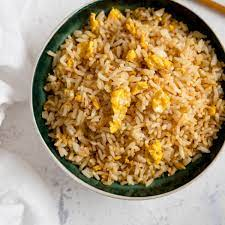

Eggs & Rice Recipe!

Description
This is a dish that my mom would make for me when I was growing up.
the best part about this dish is that it's quick, easy and pretty satisfying.
All you'll need are some eggs, butter, salt, and cooked rice. You could also
modify the recipe by adding chopped ham or spam if you want!
Ingredients
- 2 Eggs
- 2 tbsps of butter
- 1/2 cup of cooked rice
- 1 tbsp of salt
- 2 tsps of pepper
Steps
- Melt 1 tbsp of butter in pan on low-medium heat
- Fry two eggs in pan--but not too hard. Add salt and pepper as you
please.
- Add 1/2 cup of cooked rice until warm.
- Add 1 tbsp of butter
- Season to taste with salt and pepper.
- Remove pan from heat. Enjoy when ready!